Kubernetes 운영 데이터를
근거와 함께 요약하는 AI
Pod의 Metrics·Logs·Events를 통합 수집하고, LangGraph 기반 분석 흐름과 structured output을 통해 운영자가 직접 확인할 수 있는 근거와 함께 AI Summary를 제공하는 1인 개발 프로젝트다.
1. 문제 정의
운영자가 차트, 긴 로그와 이벤트 목록을 각각 해석하지 않고도 현재 Pod 상태와 판단 근거를 한 화면에서 확인할 수 있을까?
Pod 선택 → Metrics·Logs·Events 수집 → 탭별 분석 Graph → structured output → AI Summary·Evidence UI이 프로젝트는 운영 데이터를 단순히 시각화하는 데서 멈추지 않고, 현재 상태·주요 이상 신호·가능한 원인과 그 판단에 사용한 근거를 분리해 제공하는 것을 목표로 했다. Pod 현황·터미널·YAML 조회 같은 기본 관리 기능과 Metrics·Logs·Events별 AI 분석을 하나의 화면 흐름으로 연결했다.
2. 프로젝트 소개
Kubernetes Pod의 메트릭, 로그, 이벤트를 통합 수집·분석해 AI가 이상 징후를 요약하고 운영자가 빠르게 상태를 파악할 수 있도록 돕는 시스템이다.
담당 범위
- 개인 프로젝트, 1인 개발
- 기획
- FastAPI 백엔드
- React 프론트엔드
- LangGraph 기반 AI 기능 구현
핵심 구현
- Metrics / Logs / Events 탭별 AI Summary 제공
- LangGraph 기반 multi-step 분석 워크플로 설계
- Structured output 기반 응답 생성 및 UI 연동
- 운영 관측 데이터를 단순 시각화가 아닌 해석 가능한 정보로 확장
3. 전체 구현 기능
{kind=link}
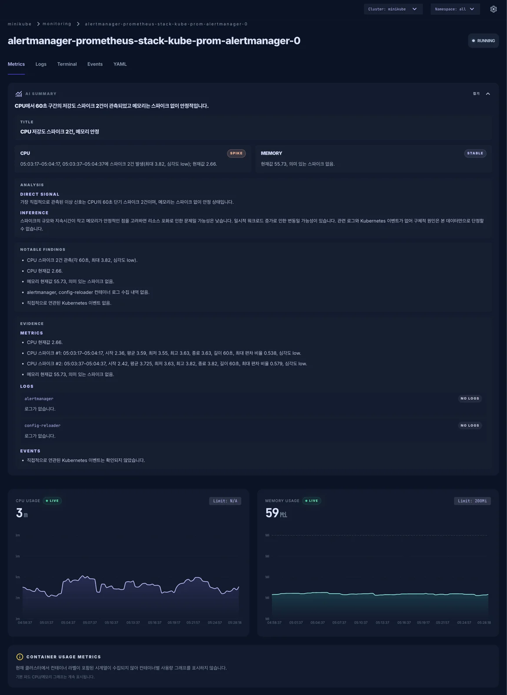
{kind=link}
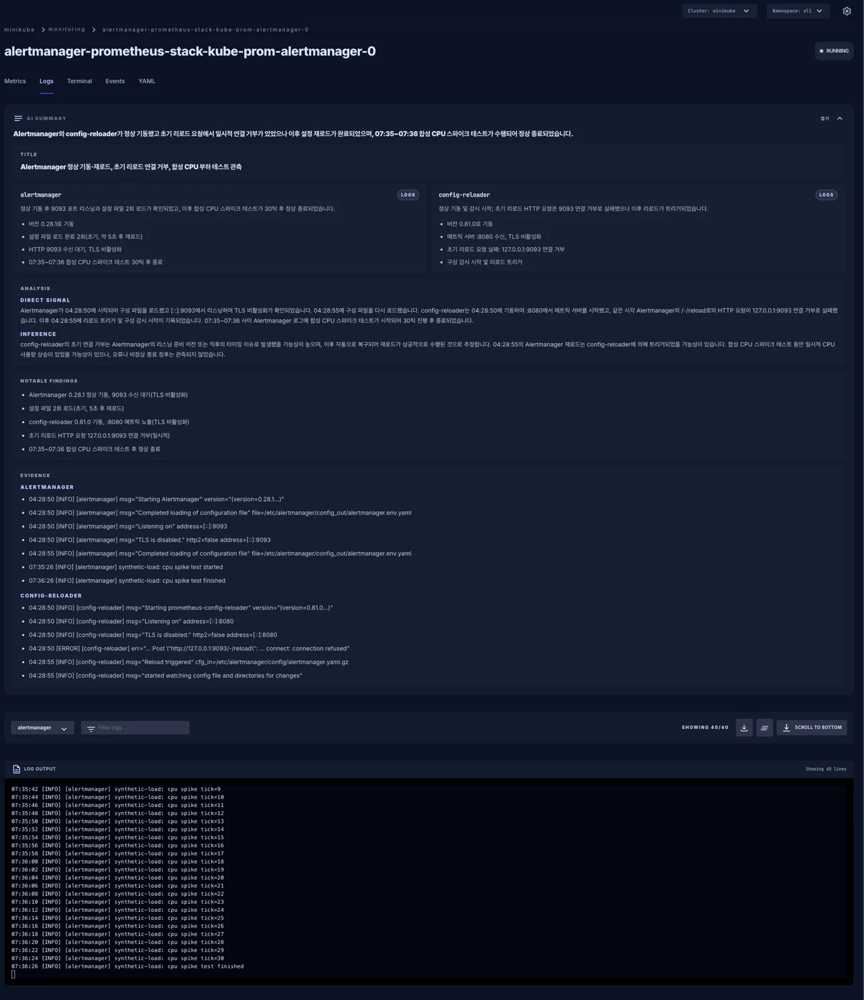
{kind=link}
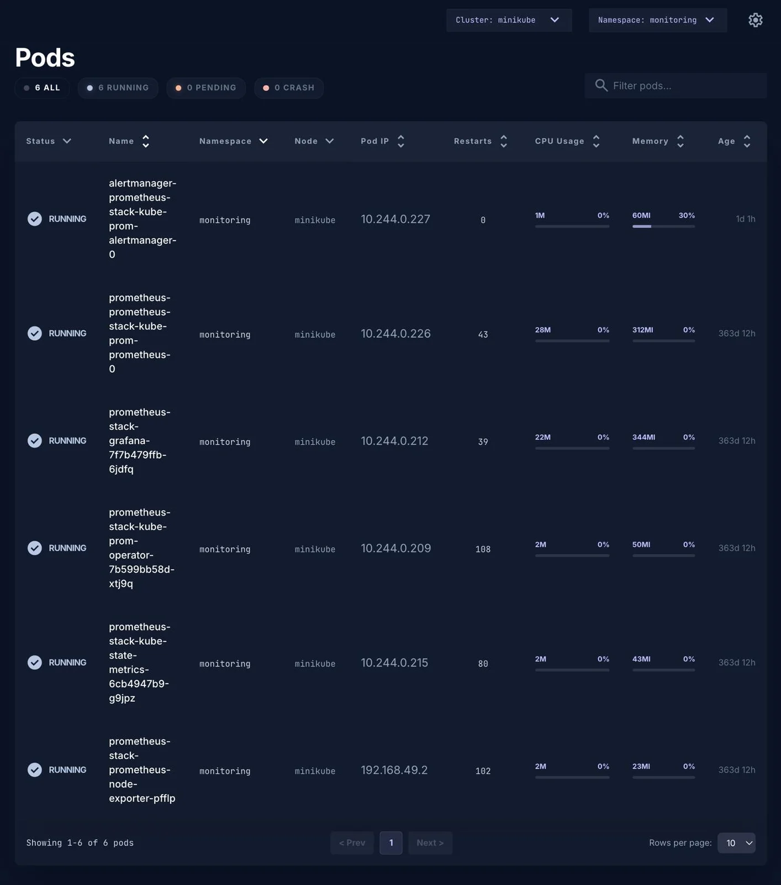
{kind=link}
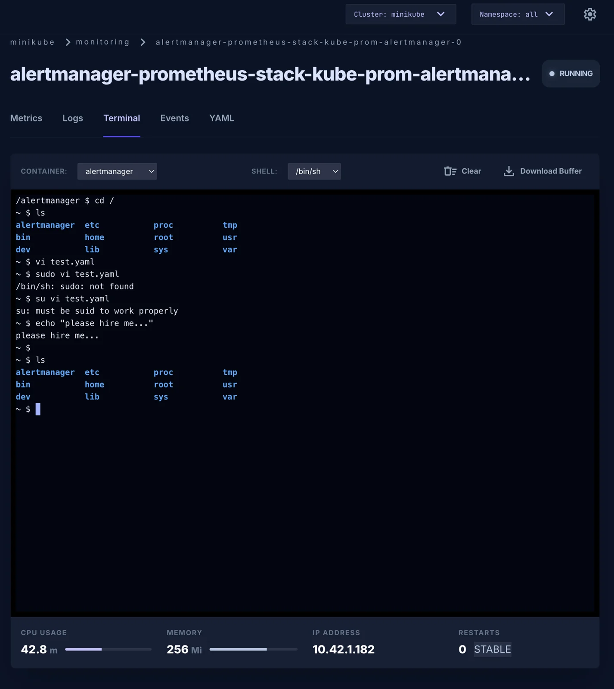
{kind=link}
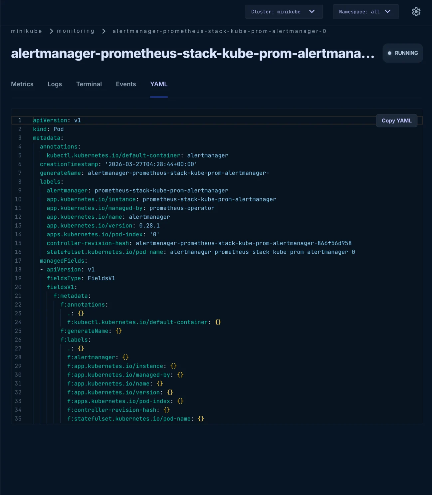
{kind=link}
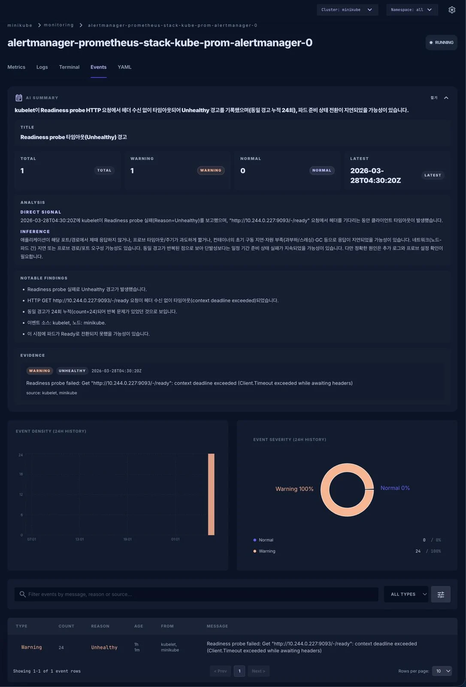
4. 시스템 아키텍처
React가 FastAPI를 호출하고, Backend가 Kubernetes API와 메트릭 소스에서 운영 데이터를 수집해 LangGraph 분석 흐름으로 전달한다.
Backend는 SQLite에 저장된 클러스터 접속 정보와 애플리케이션 설정을 바탕으로 Kubernetes Cluster와 메트릭 소스에 접근한다. FastAPI Backend가 Kubernetes API와 metrics.k8s.io 또는 Prometheus의 CPU·Memory 메트릭을 통합 조회하고, Frontend는 API를 통해 Pod 목록·상세 정보·AI Summary를 제공한다.
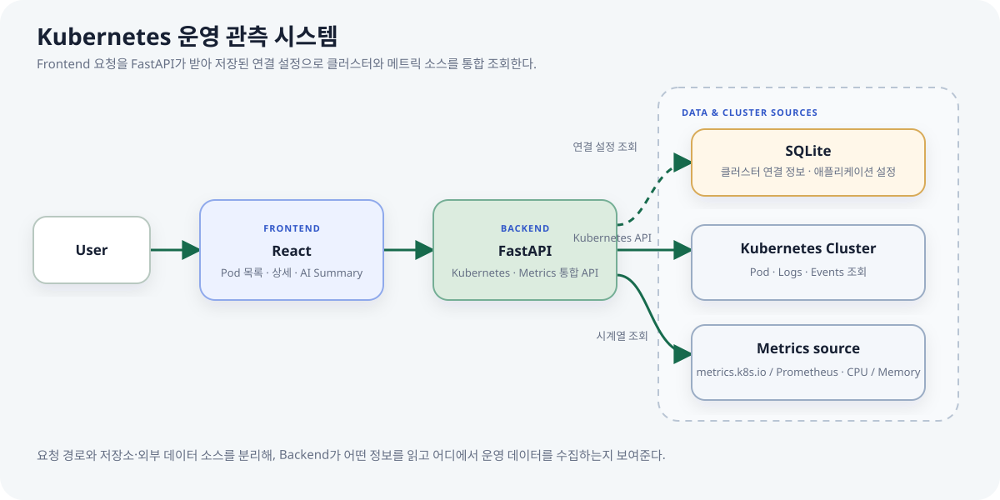
- User가 React 기반 Frontend에서 Pod와 분석 탭을 선택한다.
- Frontend가 FastAPI Backend를 호출한다.
- Backend가 SQLite의 클러스터 연결 정보와 애플리케이션 설정을 읽는다.
- Kubernetes Cluster에서 Pod·Logs·Events를 조회하고 메트릭 소스에서 CPU·Memory를 수집한다.
- 수집 결과를 탭별 LangGraph와 LLM에 전달한 뒤 structured JSON을 UI에 반환한다.
5. AI Summary 생성 아키텍처
Pod 상세 화면에서 요청한 데이터를 기준으로 메트릭·로그·이벤트를 수집하고, LangGraph 서브그래프와 LLM structured output을 통해 탭별 AI Summary를 생성한다.
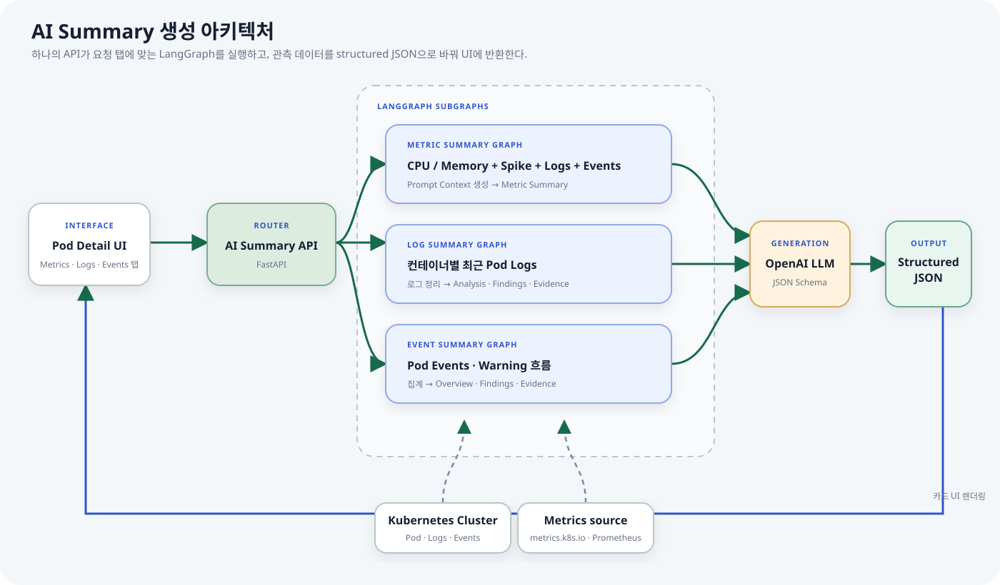
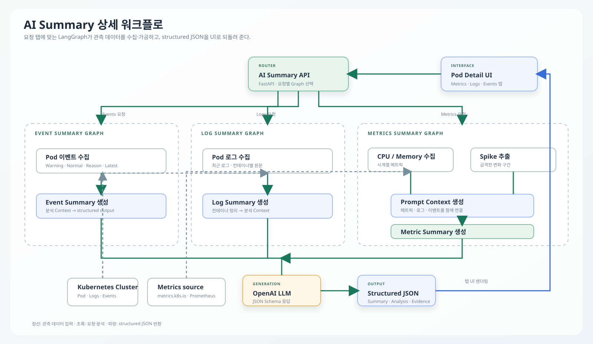
- Pod 상세 화면에서 탭별 AI Summary 요청이 발생한다.
- FastAPI가 요청을 받아 Metrics Summary Graph, Log Summary Graph 또는 Event Summary Graph를 실행한다.
- 서브그래프가 Kubernetes Cluster와 메트릭 소스에서 필요한 데이터를 수집·가공한다.
- Metrics Graph는 CPU·Memory 메트릭, Pod 로그, Pod 이벤트, Spike 추출 결과로 Prompt Context를 만든다.
- OpenAI LLM이 JSON Schema에 맞춘 structured output을 생성한다.
- Frontend가 응답을 Pod Detail UI의 탭별 카드로 렌더링한다.
6. AI 응답을 읽을 수 있게 만든 계약
AI가 만든 결론만 보여주지 않고, 직접 관측된 신호와 가능한 해석, 사용한 근거를 별도 필드로 구분했다.
| 영역 | 화면에 제공하는 내용 | 목적 |
|---|---|---|
summary | 현재 상태와 가장 중요한 변화 | 첫 화면에서 핵심 상황 파악 |
analysis.direct_signal | 메트릭·로그·이벤트에서 직접 확인된 사실 | 관측값과 해석의 혼동 방지 |
analysis.inference | 관측 신호에서 가능한 원인을 보수적으로 해석한 내용 | 확정 사실처럼 과장하지 않기 |
evidence | 대표 시계열·로그·이벤트 원문 | 운영자가 AI 응답을 직접 검증 |
structured output의 필드를 UI 카드와 직접 연결해 응답 형태를 일정하게 유지했다. 특히 Logs는 컨테이너별 요약과 대표 로그를, Events는 Warning·Normal·Latest 지표와 Reason·Timestamp·source 정보를 분리해 표시한다.
7. Metrics AI Summary 상세
CPU·Memory 시계열, Pod 로그, 이벤트를 함께 수집해 장애 징후를 요약하고 상태·분석·근거를 한 화면에 제공한다.
요약
- CPU와 Memory를 분리해 현재 상태와 Spike 여부를 빠르게 확인하는 개요 카드 구성
- 메트릭·로그·이벤트를 종합한 Pod 상태 요약
- 차트·로그·이벤트를 각각 해석하지 않아도 전체 상태를 빠르게 파악하도록 설계
Analysis
- 직접 관측된 이상 신호와 보수적인 원인 추론을 분리
- 메트릭·로그·이벤트 기반 분석 문맥 생성
analysis.direct_signal과analysis.inference로 정규화해 UI 렌더링
Evidence
- Summary의 근거를 Metrics / Logs / Events 기준으로 분리
- 메트릭 시계열, 컨테이너 로그, Kubernetes 이벤트 조회 결과를 evidence 구조로 정리
- 운영자가 요약 결론을 원본 신호와 직접 대조 가능
생성 흐름
- Metrics 요청에 맞는 Summary Graph 실행
- CPU·Memory, Pod 로그, 이벤트와 Spike를 수집·가공
- Prompt Context를 만든 뒤 structured JSON 생성
- Frontend의 Metrics AI Summary UI로 렌더링
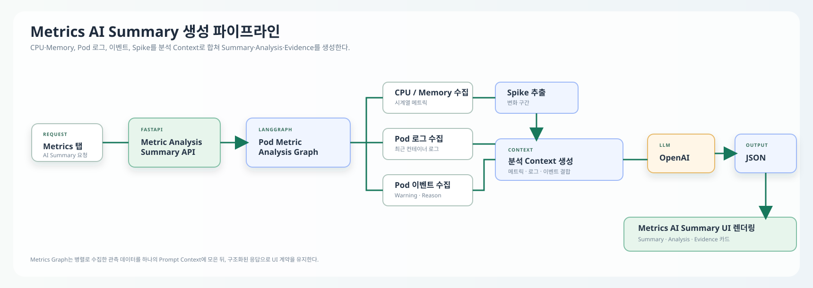

{kind=link}
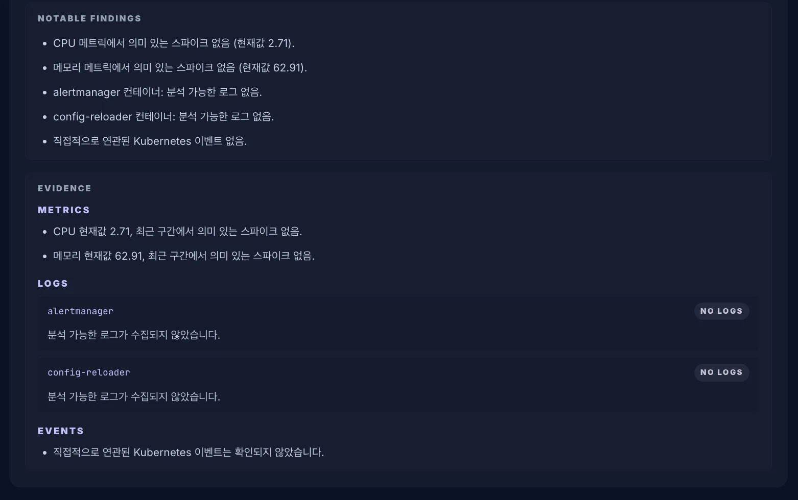
{kind=link}
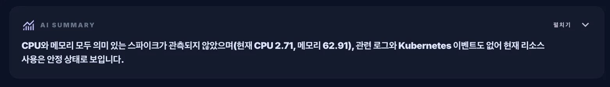
{kind=link}
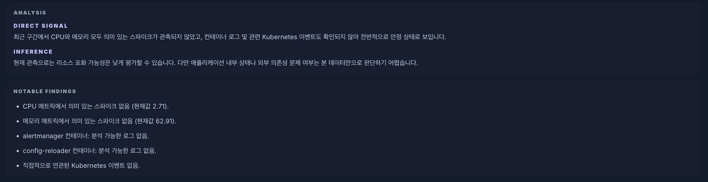
{kind=link}
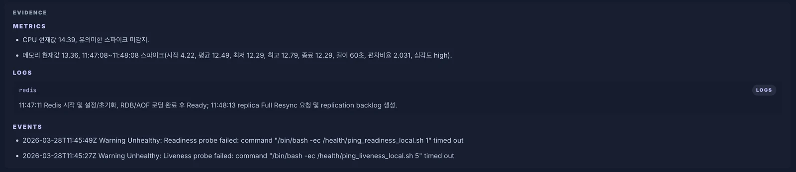
포트폴리오의 Metrics 생성 아키텍처 슬라이드 한 장은 제목은 Metrics로 표시되지만 본문에는 Log Analysis Summary API와 Pod Log Analysis Graph 흐름이 적혀 있다. 원문 내용은 아래 Logs 생성 흐름에 빠짐없이 보존했다.
8. Logs AI Summary 상세
긴 Pod 로그를 직접 읽지 않아도 컨테이너별 상태, 주요 로그 패턴과 핵심 특이사항을 빠르게 파악하도록 설계했다.
상단 요약
- 최근 Pod 로그에서 가장 중요한 신호를 상단 AI Summary에 배치
- 컨테이너별 로그 유무와 현재 상태·주요 이벤트를 한 줄로 요약
- 긴 로그를 읽지 않고 최근 상태를 빠르게 파악
컨테이너별 요약
- Pod 단위가 아니라 컨테이너 단위로 분리해 장애 위치를 좁히도록 설계
- 정상 동작, 설정 로드, 포트 리스닝, 재로드, 오류 로그를 핵심 bullet로 정리
containers필드로 정규화해 카드 UI에 렌더링
Analysis / Findings
- 로그에서 직접 확인된 사실과 가능한 원인 추론을 분리
- 중요한 로그 패턴과 상태 변화를 Notable Findings로 정리
analysis와notable_findings필드로 정규화
Evidence
- 대표 로그 원문을 컨테이너별로 구분
- 전체 로그 대신 요약에 직접 사용된 핵심 로그를 선별
evidence.containers필드로 정규화해 UI 렌더링
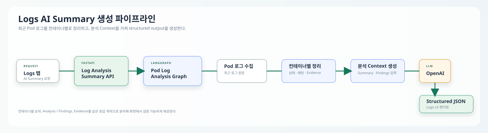
{kind=link}
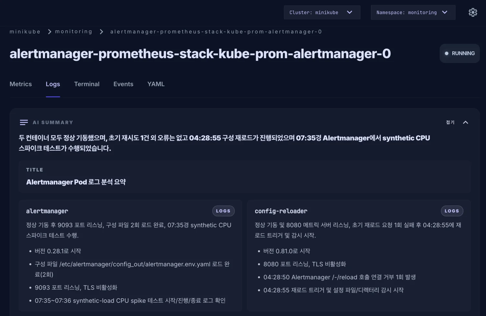
{kind=link}
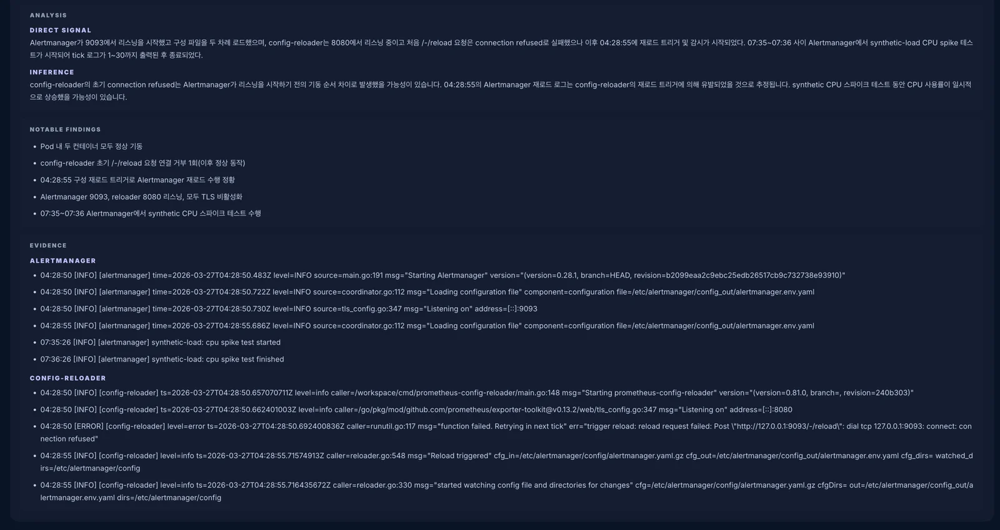
{kind=link}
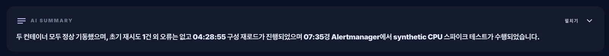
{kind=link}
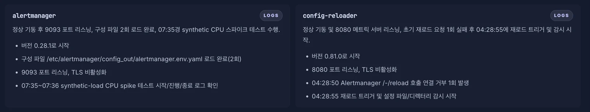
{kind=link}
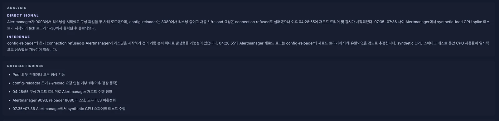
{kind=link}
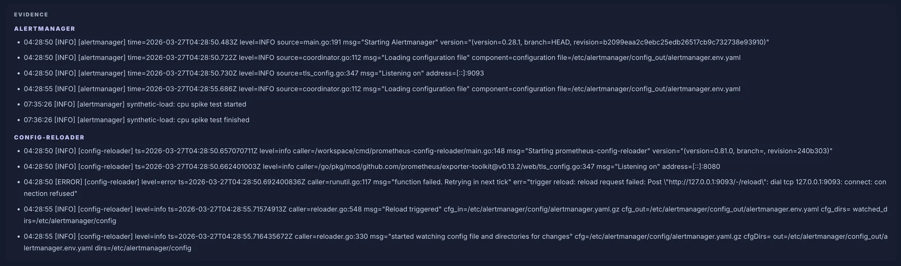
- Logs 탭 요청 시 Log Analysis Summary API가 Pod Log Analysis Graph를 실행한다.
- 최근 Pod 로그를 수집하고 컨테이너별로 정리해 분석 Context를 만든다.
- OpenAI LLM이 structured output 기반 JSON 응답을 생성한다.
- Frontend가 Logs AI Summary UI로 렌더링한다.
9. Events AI Summary 상세
Kubernetes 이벤트를 기반으로 Warning·Normal 흐름과 주요 상태 변화를 요약하고 대표 이벤트를 근거로 제공한다.
요약
- Warning / Normal 이벤트 흐름과 핵심 상태 변화를 AI가 요약
- 이벤트 목록을 직접 해석하지 않아도 최근 장애 징후와 이상 신호를 파악
- 대표 이벤트를 Evidence로 함께 제공
Event Overview
- 가장 핵심적인 이벤트 주제를 Title 영역에 먼저 표시
- 전체 이벤트 수, Warning 수, Normal 수, 최신 이벤트 시각을 카드로 분리
title과event_overview필드로 정규화
Analysis / Findings
- 직접 관측된 이상 신호와 가능한 원인 추론을 분리
- 반복된 Warning 패턴, 최신 이벤트 시각, 주요 상태 변화를 Notable Findings로 정리
analysis와notable_findings필드로 정규화
Evidence
- 대표 이벤트를 Warning / Reason / Timestamp 기준으로 구분
- 이벤트 메시지와 source 정보를 함께 노출
evidence.events필드로 정리해 카드 UI로 렌더링
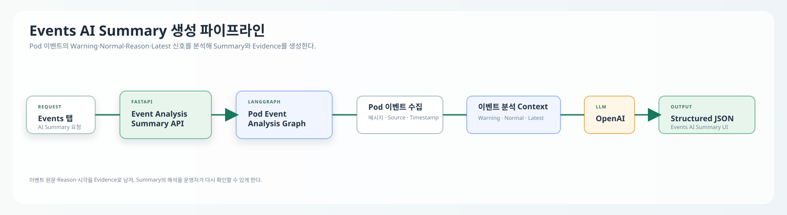
{kind=link}
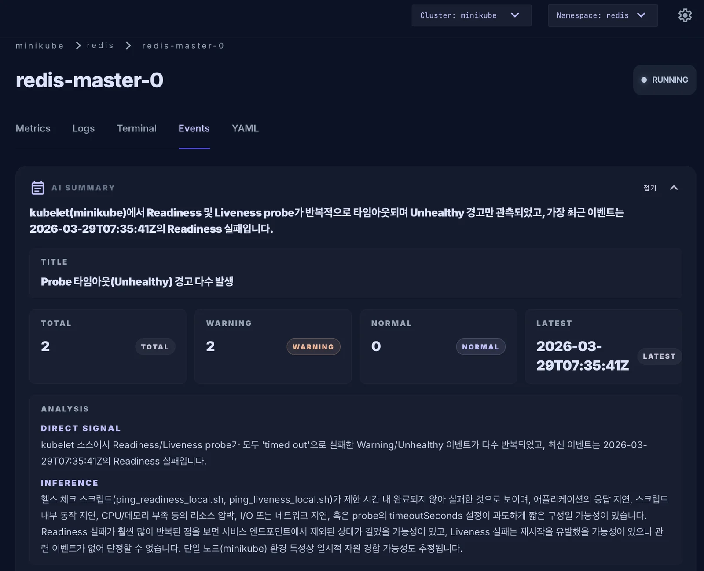
{kind=link}
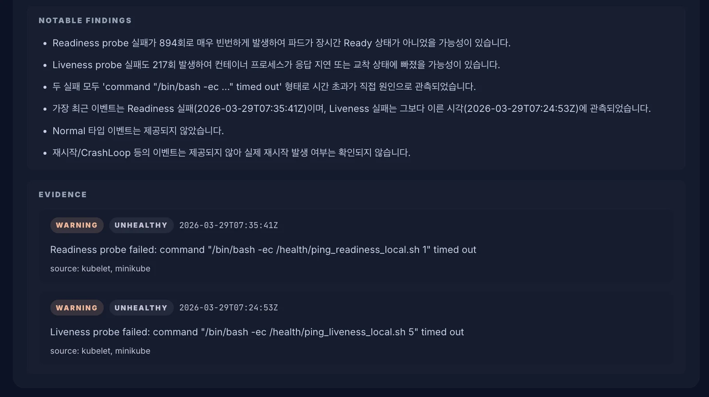
{kind=link}
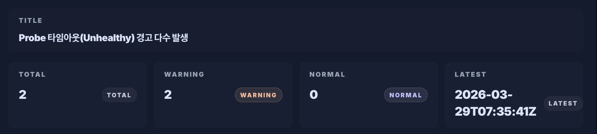
{kind=link}
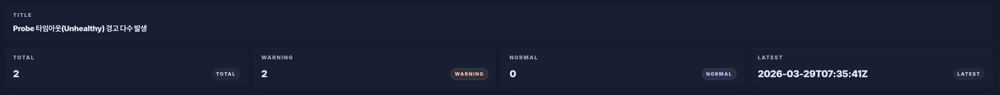
{kind=link}
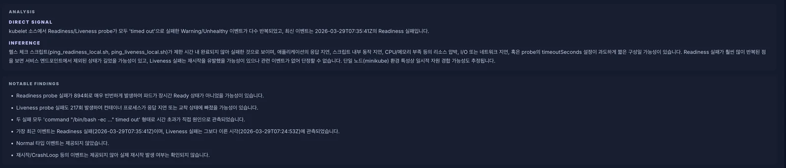
- Events 탭 요청 시 Event Analysis Summary API가 Pod Event Analysis Graph를 실행한다.
- Pod 이벤트를 수집해 이벤트 분석 Context를 만든다.
- OpenAI LLM이 structured output 기반 JSON 응답을 생성한다.
- Frontend가 Events AI Summary UI로 렌더링한다.
포트폴리오의 Event Overview 두 슬라이드는 같은 설명을 서로 다른 화면 캡처와 함께 보여주므로 두 이미지를 모두 보존했다. 반면 Evidence 슬라이드는 Analysis / Findings와 같은 화면 이미지를 재사용하고 있어 중복 이미지는 한 번만 배치하고 evidence.events 설명은 HTML 본문에 보존했다.
10. 기능 시연
프로젝트 포트폴리오에 연결된 탭별 시연 영상이다. 각 영상은 화면 동작과 AI Summary가 근거와 함께 렌더링되는 흐름을 보여준다.
11. 현재 확인되는 한계
| 현재 범위 | 추가로 필요한 검증 |
|---|---|
| 화면과 기능 흐름 중심의 구현 증거 | 장애 유형별 정답셋과 Summary 정확도·재현율 평가 |
| LLM이 생성한 직접 신호·추론·근거 분리 | 근거가 실제 결론을 충분히 지지하는지 자동·수동 채점 |
| 클러스터 조회와 분석 기능 | 권한 분리, 민감 로그 마스킹, 다중 클러스터 운영 정책 |
| 요약을 통한 운영 판단 보조 | 실제 조치 실행 전 승인·검증·감사 로그가 있는 Agent Loop |
따라서 정확한 프로젝트 표현은 “Kubernetes 장애를 자동 해결하는 Agent”가 아니라 운영 관측 데이터를 수집하고 근거와 함께 해석 가능한 AI Summary를 제공하는 시스템이다.